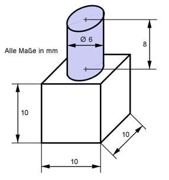
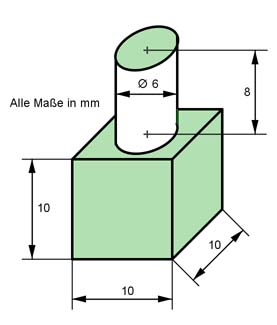

Aufgabe 40 Berechnen Sie das Volumen V und die Oberfläche O des dargestellten Körpers.  V = weißer Würfel + blauer Zylinder d = 6 mm --> r = d/2 = 6 mm/2 = 3 mm a = 10 mm V = a³ + п * r² * h V = 10 mm * 10 mm * 10 mm + п * 3³ mm² * 8 mm V = 1 000 mm³ + 226,1 mm³ = 1 226,1 mm³  O = grüne Würfeloberfläche + weiße Zylindermantelfläche O = 6 * a² + 2 * п * r * h O = 6 * 10² mm² + 2 * п * 3 mm * 8 mm O = 600 mm² + 150,8 mm² = 750,8 mm²